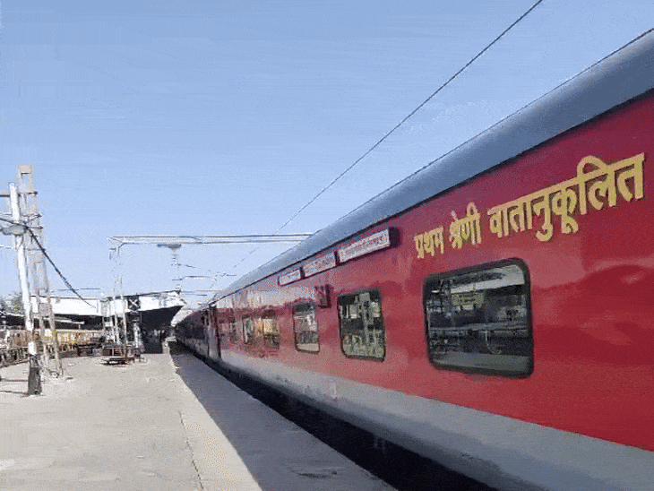
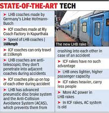
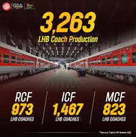
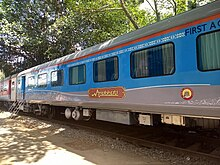
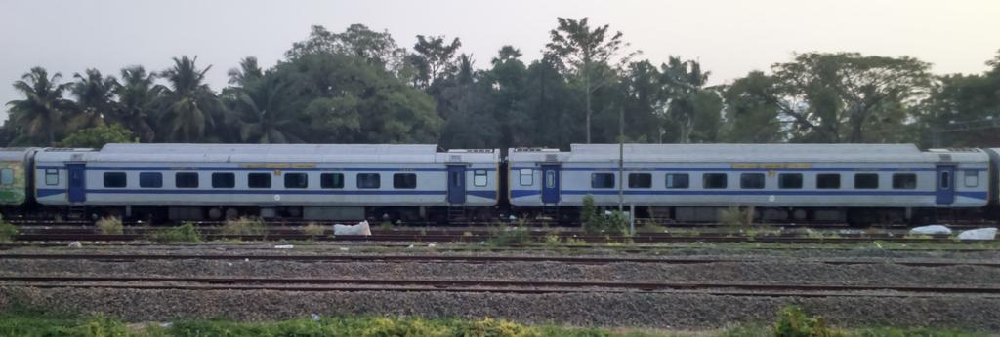
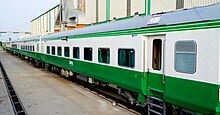

Linke-Hofmann-Busch (LHB)

Introduction

Linke-Hofmann-Busch (LHB) coach is a passenger coach of Indian Railways that is developed by Linke-Hofmann-Busch of Germany[1][2] and produced by rail coach manufacturing units at Kapurthala, Chennai and Raebareli.[3][4] They have been used since 2000 on the 1,676 mm (5 ft 6 in) broad gauge[5] network of Indian railways. Initially, 24 air-conditioned coaches were imported from Germany for use in the Shatabdi Expresses, following which, the Rail Coach Factory started manufacturing after technology transfer.[6] IR declared that all ICF coaches will be replaced by LHB coaches to provide more safety and comfort. The last ICF Coach was flagged off on 19 January 2018, making way for LHB Coaches to be used for all new coaches to be introduced by Indian Railways in the future.
History

During 1993–94, Indian Railways decided to look for a passenger coach design which would be lighter and capable of higher speeds compared to their existing rakes. The main features of the Railways' specification were high speed light weight coaches to run on the present infrastructure of the Indian Railways, i.e. the railway, track and environmental conditions in India at an operating speed of 160 kilometres per hour (99 mph).[5][8] It was decided by the Railways that the design would first be tried in the Rail Coach Factory in Kapurthala (RCF), and upon successful completion of this trial, it would be tried in the Integral Coach Factory in Perambur.[6]
In 1995, after a global selection process, Alstom-LHB received the order from Indian Railways to design and develop a new passenger coach under a transfer of technology agreement.[8] As part of the order, Alstom-LHB had to execute two contracts, one for the supply of "Light Weight High Speed Coaches for Broad Gauge"[5] which includes the development, design and manufacture of 19 AC 2nd class chair cars, 2 AC executive class chair cars and 3 generator-cum-brake vans[9] and the other contract for the "Technology Transfer" which includes the transfer of technology for design and manufacturing, the training of Indian Railways personnel in the premises of the manufacturer and the technical assistance at RCF during the start of production.[6]
Out of the 24 coaches imported from Germany, all of them mostly being air-conditioned chair cars,[10] the first lot were used for New Delhi-Lucknow Shatabdi Express on a trial basis. It didn't turn out be successful as the coaches' wide windows were targets of mischief and stone-pelting. Railways had to use sealing tapes to tape up the bruised windows.[8] When these rakes were brought into service, couplers came unstuck and the data collected from the passenger feedback showed that the air conditioning was not "very effective". They were withdrawn from service and after attending to the problems, Railways reintroduced them on the New Delhi-Lucknow Shatabdi Express and proved successful.[8][11]
The RCF began to manufacture other variants of LHB design like the air-conditioned first class, AC 2 tier sleeper, AC 3 tier sleeper, hot buffet (pantry) car etc., from 2001 to 2002, and rolled out its first rake in December 2002. The first such rake was introduced for Mumbai–New Delhi Rajdhani Express in December 2003.[10] Up to November 2023, over 31,000 LHB coaches have been produced by the RCF, ICF, and MCF.[12] These coaches are being used in various trains across the country and have been offering better passenger comfort.[13] Indian Railways plans to convert all trains to LHB or Vande Bharat type coaches by 2030.
Technical

The coaches are designed for an operating speed up to 160 km/h (99 mph) and could go up to 200 km/h (124 mph).[15] They have been tested up to 180 km/h (112 mph). Their length of 23.54 m (77.2 ft) and a width of 3.24 m (10.6 ft) means a higher passenger capacity, compared to conventional rakes.[16] The tare weight of the AC chair car was weighed as 39.5 tonnes (38.9 long tons; 43.5 short tons).[17] They are considered to be anti-telescopic, which means they do not get smashed through a second coach or flip in case of a collision (chiefly head-on). These coaches are made of stainless steel and the interiors are made of aluminium which make them lighter as compared to conventional rakes.[8] Each coach also has an "advanced pneumatic disc brake system" for efficient braking at higher speeds, "modular interiors" that integrate lighting into ceiling and luggage racks with wider windows.[18] The improved suspension system of LHB coaches ensures more riding comfort for the passengers compared to conventional rakes. The air conditioning system of the LHB coaches is of higher capacity compared to the older rakes and is electronically controlled which is said to give passengers better comfort than the older coaches during summer and winter seasons. They are relatively quieter as each coach produces a maximum noise level of 60 decibels while conventional coaches can produce 100 decibels.
Each LHB coach costs between ₹15 million (US$170,000) to ₹20 million (US$230,000), whereas the power car which houses a generator costs about ₹30 million (US$350,000).
Production

Since 2001 onwards until November 2023, over 31,000 LHB coaches were made by various Indian railway coach factories.
During the 2008–09 Railway Financial Budget session, it was announced that after 2010 only stainless steel coaches will be manufactured.
In 2009–10, 169 LHB coaches produced by Rail Coach Factory (RCF), Kapurthala, Indian Railway. In 2010–11, 316 LHB coaches produced by Rail Coach Factory (RCF), Kapurthala, Indian railways.[21][22] In 2011–12, 260 LHB coaches manufactured by RCF[23] In 2012–13, 470 LHB coaches produced by Rail Coach Factory (RCF), Kapurthala.
In 2011, the Ministry of Indian Railways had approved the construction of a 300 LHB coaches per annum facility at ICF at a cost of ₹2.52 billion (equivalent to ₹5.2 billion or US$60 million in 2023). The foundation stone was laid in April 2012. It was inaugurated in July 2015 by Railway Minister Suresh Prabhu through video conferencing.
During 2013–14, Integral Coach Factory produced 25 LHB coaches.[26] It planned to increase its manufacturing capacity of LHB coaches. It set a target to manufacture 300 LHB coaches in 2014–15 and reach a capacity of 1000 LHB coaches by 2016–17.
Modern Coach Factory, Raebareli produced 711 coaches during 2017–18 and planned to produce 1400 coaches in 2018–19.
In FY2022–23, Indian Railways manufactured 4,175 LHB coaches. Of these, 1221 coaches were produced at Rail Coach Factory (RCF), 1891 at Integral Coach Factory (ICF) and 1063 at Modern Coach Factory (MCF). LHB coach production increased by 45 percent in the previous financial year. In FY 2018–19, it manufactured 4429 coaches, 6277 coaches in FY 2019–20, 4323 coaches in FY 2020–21, and 6291 coaches in FY 2021–22.
Anubhuti

Anubhuti coach (EA) is a luxury LHB coach.[33] These coaches will progressively be introduced on the Shatabdi and Rajdhani Express trains.[34]
The New Delhi–Chandigarh Shatabdi Express will have the first Anubhuti coach, followed by Jaipur Shatabdi.[34] All Shatabdi trains will have these and later Rajdhani Express will also have them. The Western Railway received its first Anubhuti Rail Coach on 12 December 2017 for its Mumbai Central–Ahmedabad Shatabdi Express.[35] The Central Railway augmented the Pune–Secunderabad Shatabdi Express with an Anubhuti coach from 25 December 2017.[36] Southern Railway is operating Anubhuti coach in Chennai Central–Coimbatore Shatabdi Express.[37]
It is a state of the art LHB coache with a 56 seating capacity,[38] featuring ergonomically designed cushioned seats, LCD screens, modular toilets and stylish interiors, announced in the Railway Budget of 2014, are to be produced at the Raebareli coach factory. They are fitted with automatic doors, the interiors and lighting arrangements will be aesthetically designed to enhance the ambience.
It is estimated to cost ₹28 million (US$320,000) to manufacture an Anubhuti coach at the Modern Coach Factory, Raebareli.
Hybrid LHB Coaches

Hybrid LHB coaches were a type of passenger coach used by Indian Railways. They had a Linke-Hofmann-Busch (LHB) shell fitted over Integral Coach Factory (ICF) bogies and have a maximum speed of 120 km/h (75 mph). They were technologically superior and provided better travelling experience and safety than conventional ICF type coaches. However these coaches are no longer in service.
Bangladesh

This was the first and biggest-ever consignment of LHB coaches exported by Indian Railways. The contract agreement between RITES & Bangladesh Railway was executed on 21 January 2015, and subsequently between RITES and Rail Coach Factory, Kapurthala on 30 September 2015 for supply of these coaches. These coaches were customized as per the Bangladesh Railway's requirement.[40] Another order for 200 more coaches was on 20 May 2024. 104 of these coaches will be air-conditioned, and 96 will be non-AC. These coaches will be manufactured at the Rail Coach Factory (RCF) in Kapurthala. The contract includes a supply and commissioning period of 36 months, followed by a 24-month warranty period.
Mozambique

In June 2019, Mozambique Ports and Railways Authority signed an MoU with Indian railway's RITES to procure 90 Cape gauge coaches, including 60 loco-hauled designed on LHB coaches platform and 30 DEMU coaches designed and developed by Integral Coach Factory, Chennai and RDSO, Lucknow.This was Modern Coach Factory, Raebareli's first export consignment after its commissioning almost 8 years ago. These coaches were designed by RDSO, Lucknow and developed by Modern Coach Factory, Raebareli.[42]
On 16 December 2022, MoR informed through Facebook post that it had received a repeat order for 10 more 2nd Class AC Chair locomotive hauled coaches from CFM Mozambique.